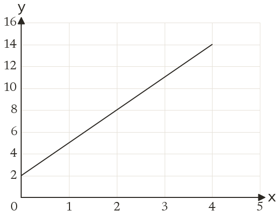
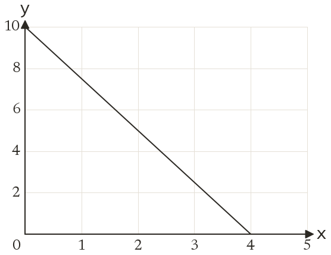

Westonbirt Maths · Distance-Time and Conversion Graphs
Finding Gradients
Name: ______________________ Date: ____________
1
Find the gradient of the line.
2
Find the gradient of the line.
3
A line passes through (2, 5) and (6, 7). Find its gradient.
4
A line passes through (-2, 4) and (3, -6). Find its gradient.
5
A line passes through (1, 7) and (5, 7). Find its gradient.
Ext
A line through (1, k) and (4, 13) has gradient 3. Find k.

